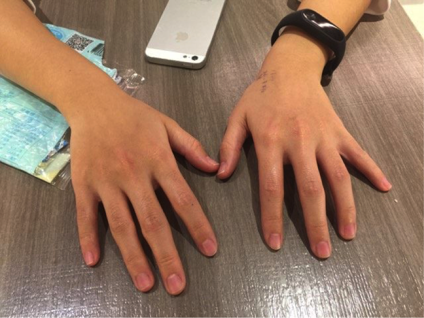

臺灣龍頭臺大醫院 血汗護理環境
報導／姜 逸

▲ 身為台灣醫院龍頭的台大醫院，光是每日的門診就醫人次就高達7000多人，可見其對於民眾健康的重要性。攝影／姜逸
護理師是醫療照護體系中最重要的醫事人力，他們24小時提供病人最直接的醫療照顧，使病人恢復健康、順利出院並重返社區。過去護士，現稱護理師，護士執照考試是專技普考，高職護理相關科系畢業即可報考；護理師執照考試是專技高考，必須護理專科以上畢業才能報考。兩者在醫院的工作內容相同，僅薪資方面，護理師會比護士多1000至2000元。
為了提升護理專業性，2012年廢除護士執照考，但過去考取護士執照的護理人員，依舊可以繼續執業。根據中華民國護理師護士公會全國聯合會統計指出，全台約15萬名執業護理人員中，超過八成具有護理師執照。
台大醫院內科門診不願具名的林姓護理師說，過去民眾都稱她小姐或護士小姐，但她認為被稱呼小姐很像是在稱呼特種行業，讓她感到不受尊重。再者，近年來有許多男性投入護理工作，護士小姐這個稱謂已不再適用護理人員。台大醫院前護理部主任黃璉華，於2011年開始推行「叫我護理師！」正名活動，希望將護理人員與醫師、藥師等同師級對待；護理界也將每年5月12日的國際護士節，正名為國際護師節，以提升護理人員更專業的形象。
護理人員為重要照護角色 卻最血汗
健保署於去（2016）年12月，公佈105年4-6月各醫院全日平均護病比，前三名護病比最高的醫院分別為：中國醫藥大學附設醫院、台中榮總及台大醫院。當中，身為台灣醫療龍頭的台大醫院，護病比竟榜上有名，引起民眾一陣譁然。也不禁讓人質疑，連台大醫院都做不到合理護病比1:7，更不用說其他醫院了。
▲ 台大醫院（橘色），最高平均護病比高達1:8.7，意即一名護理人員要照顧近9位病人，忙碌程度難以想像。製表／姜逸
註：2月逢春節期間，醫院因成本考量會關床，護病比偏低。
護病比為照護品質重要指標
護病比(Patient-to-Nurse ratio)係指每一位護理師與其照顧病人數的比例。現任陽明大學護理學院教授、台灣護理產業工會理事長盧孳艷表示，護病比是病人生命安全的重要照護品質指標。2008年，美國醫學會雜誌（JAMA）有研究指出，醫事人力負荷過高，是造成病人不必要死亡及傷害的主要原因。以一般急性病房護病比1:4為標準，護理師每多照顧1位病人，病人30日內死亡率就會上升7%、護理師超時工作與過勞比例增加23%，甚至有43%的護理照護工作無法完成。
目前衛服部使用醫院評鑑基準之三班護病比合理條文，規範不同層級醫院的護病比。相較於美國、日本、澳洲等各國皆使用法律或法規命令，行政規則的效力位階屬最低，法官在審法上都可不受其拘束。再者，醫院評鑑並非每天進行，院方只要在評鑑期間調整護病比至標準狀態，等評鑑過後再恢復原狀，護理人員依舊束手無策。
在台大醫院外科病房工作半年的小菁（化名）說，病房共有37床，平日白班有5位護理師上班，但假日卻只有4位，平均一人要照顧7到10位病人。再加上假日負責行政工作的書記休假，護理師還得自己辦理病人出入院等工作，根本忙不過來。
超時工作消磨護理人員熱情
早在民國87年，護理人員就全面適用勞動基準法。100年，醫療環境漸漸變差，護理人員為醫事人員人數最多，自然而然首當其衝。103年，勞委會將護理人員排除於勞基法第84-1條，也就是無限上綱的責任制，保障護理人員每天工作不得超過8小時，雙週總工時不得超過84小時；如要額外加班，不可超過12小時，每月加班時數不得超過46小時，且可以領延時工資。
105年12月6日修正第34-2條，規定勞工在更換班次時，至少應有連續11小時的休息時間。此舉有助於改善花花班的出現，意指禁止今天上完白班，晚上接著上大夜班。不過，根據台灣產業護理工會統計，護理人員平均每天仍然超時工作1至2小時。
台大醫院白班工作時間是從早上七點半到下午三點半，共八個小時，但小菁一整天的工作，往往從早上六點四十分就開始。「如果不提早進病房，工作會做不完，我白班最晚曾經到晚上八點才下班呢！」小菁苦笑著說。
早上一到病房，她得先清點換藥器材、準備病人藥物及手術同意書，七點半到八點初完成與大夜班交班，接下來的一個小時，她推著沉重的護理工作車，替7-8位不等的病人做治療及發藥。好不容易完成第一次治療，接下來就是坐在電腦前，完成病人今日的護理記錄，中途還得不時處理準備動手術、動完手術回病室及新入院的病人。待十一點去做第二次治療，並向病人進行疾病衛教。中午休息吃飯時間往往只有半小時不到，便趕緊動身去做下午的治療，接著就一路忙到與小夜班交班為止。
小菁認為，在一個護理師要照顧7-8位病人的情況下，一個病人最多只能花五分鐘，其實是非常可惜的。曾經，她多花10分鐘替剛入院的病人做疾病衛教，就被學姊罵動作怎麼這麼慢，令她相當委屈。「如果我有時間，我可以跟病人多講句話，降低他住院的焦慮。但短短五分鐘，連換點滴、抽痰都嫌趕了，真的沒有多餘的時間。」小菁無奈的說。

菜鳥護理師困境
中華民國護理師護士公會全國聯合會理事長高靖秋指出，台灣護理人力不足，並不是每年訓練的畢業生人數不夠，而是因為護理人員大量流失造成。中華民國護理師護士公會全國聯合會統計，台灣護理人員平均工作年資僅7.7年。105年12月護理人員執業率，執登158,318人，領照269,350人，扣除65歲以上領照10,675人，執業率61.2%。
▲ 近4成領有護理師執照的人，不願意進入醫院擔任護理師工作。資料來源／中華民國護理師護士公會全國聯合會，製圖／姜逸
台北市護理師公會統計，一年內新進護理人員離職率高達58.7%，當中55%為到職半年內就離職。對於護理人力缺口，盧孳艷認為，與其花力氣思考如何訓練更多護理人員，政府不如想辦法改善護理環境，留住現有的護理人員，並讓原先擁有護理師執照的人再回到醫院執業。
臺北醫學大學護理學系榮譽教授盧美秀點出，造成新進護理師離職原因，除了薪資福利，另一方面則是來自職場同事之間的壓力。在護理界，學長姊制是非常根深蒂固的。初進職場的新人，往往會因為護理技術不純熟、不了解醫院常規等等而失誤。此時，部分資深護理師就會仗著自己學長姊的身份，除了態度不友善，甚至會用責罵、臭臉等方式對待新進護理師。
▲ 工作內容及同事之間的人際壓力，是造成新進護理師離職的一大原因之一。資料來源／盧美秀，製圖／姜逸
在台大醫院心臟科病房工作的家家（化名），才工作第五個月，就因為必須輪班，導致生活作息不正常、休假時間不固定，和家人及朋友相處時間變少、超時工作，出現腸胃炎、腰酸背痛等不適，毅然決然地離開臨床環境。「其實學姊們也是我想離職的主要原因之一。」家家皺著眉頭說。她表示，曾經因為處理病人的方式和小夜班學姊不一樣，遭到學姊酸言酸語「你是外傭嗎？你做事真的很瞎耶！」讓她倍感受傷。「我不知道他們（資深護理師）為什麼要這樣對新人，我們撐不下去離職，對他們又沒有好處。」家家無奈的說。
曾在台大醫院內科病房擔任一年又一個月的護理師，不願透露姓名的吳小姐談起會離開臨床的原因，除了有進修的打算，另外一個很大的原因是因為職場壓力，甚至該稱作是職場霸凌。回憶過往工作經驗，吳小姐無奈的說，資深護理師對新進護理師的態度，常常是很不耐煩、甚至有些抗拒的。他們會情緒化地在新人面前摔交班本，甚至因為她有台大畢業的光環，做任何事都會放大檢視，讓她非常不舒服。
為了減輕新進護理人員壓力，台大醫院其實有安排兩年期護理人員訓練計劃(PGYN)，「不過那是有名無實的啦！」吳小姐苦笑。她解釋，台大醫院的做法，是安排同單位的資深護理師擔任新人的心靈導師。醫院定期撥款餐費，希望學姊依據自己的過往經驗，協助新人解決心理問題。但真實情況卻是，學姊很少與她面談，都直接將會談表單丟給她寫；而在單位裡遇到的壓力與問題，吳小姐也不敢直接跟學姊講明，深怕傳到其他學姊耳裡會讓情況更加糟糕。「和病人互動我覺得很開心，但同事間的不愉快卻遠遠超過這個開心，所以我選擇離開。」吳小姐嘆了口氣的說。
截至截稿前，記者都無法約訪到台大醫院護理部，因此無從了解目前台大醫院內部，對護理人員工作環境的改良與因應政策，也沒辦法釐清院方是否有積極在處理護理人員工作環境問題。
護理人員穿梭在醫院每個角落，只為提供病人最好的照護。如果在白衣天使們辛苦的背後，藏著這麼多工作環境的問題，醫院及政府勢必要好好正視及處理，而不只是用假象的醫院評鑑、效力不夠的行政規則應付了事，除了會影響護理人員工作權益，更間接傷害了台灣民眾的就醫權利。
▲ 護理人員工作環境不好，除了影響護理人員生理及心理，也會間接影響就醫民眾及照顧品質，不容小覷。攝影／姜逸